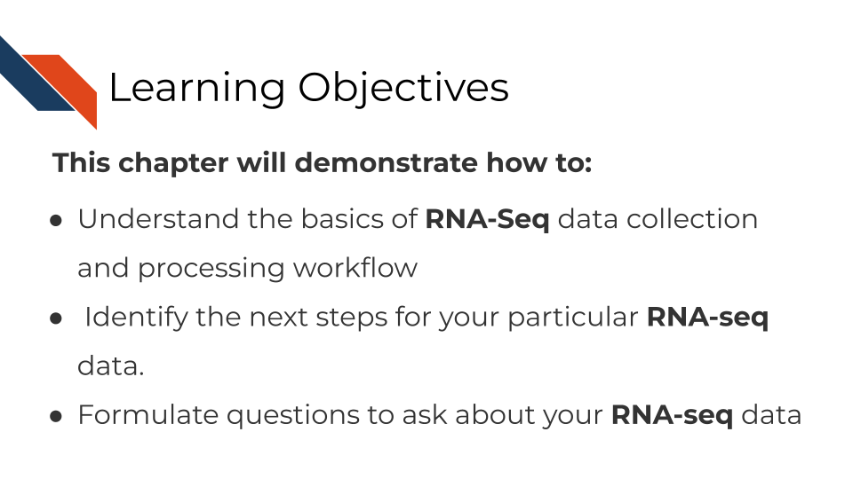
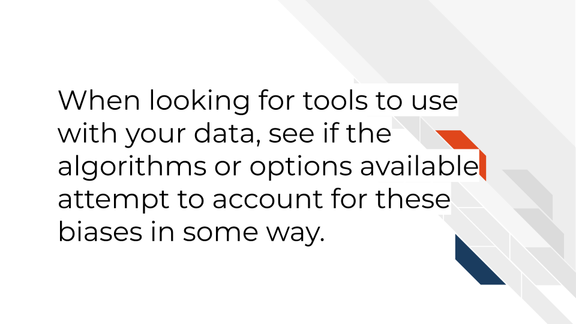
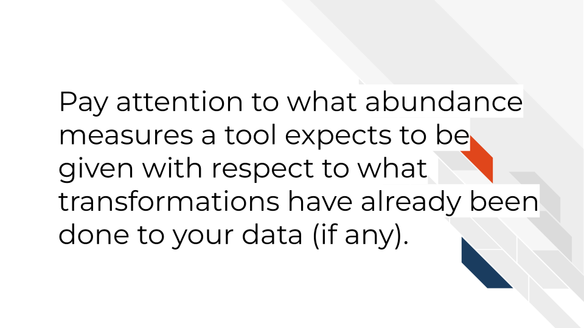

<!DOCTYPE html>
<html lang="" xml:lang="">
<head>

  <meta charset="utf-8" />
  <meta http-equiv="X-UA-Compatible" content="IE=edge" />
  <title>Chapter 12 Bulk RNA-seq | Choosing Genomics Tools</title>
  <meta name="description" content="Description about Course/Book." />
  <meta name="generator" content="bookdown 0.24 and GitBook 2.6.7" />

  <meta property="og:title" content="Chapter 12 Bulk RNA-seq | Choosing Genomics Tools" />
  <meta property="og:type" content="book" />
  
  
  <meta property="og:description" content="Description about Course/Book." />
  

  <meta name="twitter:card" content="summary" />
  <meta name="twitter:title" content="Chapter 12 Bulk RNA-seq | Choosing Genomics Tools" />
  
  <meta name="twitter:description" content="Description about Course/Book." />
  


  <meta name="viewport" content="width=device-width, initial-scale=1" />
  <meta name="apple-mobile-web-app-capable" content="yes" />
  <meta name="apple-mobile-web-app-status-bar-style" content="black" />
  
  <link rel="shortcut icon" href="assets/ITN_favicon.ico" type="image/x-icon" />
<link rel="prev" href="rna-methods-overview.html"/>
<link rel="next" href="single-cell-rna-seq.html"/>
<script src="libs/header-attrs-2.10/header-attrs.js"></script>
<script src="libs/jquery-3.6.0/jquery-3.6.0.min.js"></script>
<script src="https://cdn.jsdelivr.net/npm/fuse.js@6.4.6/dist/fuse.min.js"></script>
<link href="libs/gitbook-2.6.7/css/style.css" rel="stylesheet" />
<link href="libs/gitbook-2.6.7/css/plugin-table.css" rel="stylesheet" />
<link href="libs/gitbook-2.6.7/css/plugin-bookdown.css" rel="stylesheet" />
<link href="libs/gitbook-2.6.7/css/plugin-highlight.css" rel="stylesheet" />
<link href="libs/gitbook-2.6.7/css/plugin-search.css" rel="stylesheet" />
<link href="libs/gitbook-2.6.7/css/plugin-fontsettings.css" rel="stylesheet" />
<link href="libs/gitbook-2.6.7/css/plugin-clipboard.css" rel="stylesheet" />


<link href="libs/anchor-sections-1.0.1/anchor-sections.css" rel="stylesheet" />
<script src="libs/anchor-sections-1.0.1/anchor-sections.js"></script>
  <html>
  
  <head>
  <title>Chapter 12 Bulk RNA-seq | Title</title>
  </head>
  
  <body>
  
  <!-- Global site tag (gtag.js) - Google Analytics -->
  <script async src="https://www.googletagmanager.com/gtag/js?id=G-QWJXTLJBQ7"></script>
  <script>
    window.dataLayer = window.dataLayer || [];
    function gtag(){dataLayer.push(arguments);}
    gtag('js', new Date());
    
    gtag('config', 'G-QWJXTLJBQ7');
  </script>
      
  </body>
  </html>


<style type="text/css">
/* Used with Pandoc 2.11+ new --citeproc when CSL is used */
div.csl-bib-body { }
div.csl-entry {
  clear: both;
}
.hanging div.csl-entry {
  margin-left:2em;
  text-indent:-2em;
}
div.csl-left-margin {
  min-width:2em;
  float:left;
}
div.csl-right-inline {
  margin-left:2em;
  padding-left:1em;
}
div.csl-indent {
  margin-left: 2em;
}
</style>

<link rel="stylesheet" href="assets/style_ITN.css" type="text/css" />
</head>

<body>


  <div class="book without-animation with-summary font-size-2 font-family-1" data-basepath=".">

    <div class="book-summary">
      <nav role="navigation">

<ul class="summary">
<a href="https://www.itcrtraining.org/">

<li class="divider"></li>
<li class="chapter" data-level="" data-path="index.html"><a href="index.html"><i class="fa fa-check"></i>About this Course</a>
<ul>
<li class="chapter" data-level="0.1" data-path="index.html"><a href="index.html#available-course-formats"><i class="fa fa-check"></i><b>0.1</b> Available course formats</a></li>
</ul></li>
<li class="chapter" data-level="1" data-path="introduction.html"><a href="introduction.html"><i class="fa fa-check"></i><b>1</b> Introduction</a>
<ul>
<li class="chapter" data-level="1.1" data-path="introduction.html"><a href="introduction.html#target-audience"><i class="fa fa-check"></i><b>1.1</b> Target Audience</a></li>
<li class="chapter" data-level="1.2" data-path="introduction.html"><a href="introduction.html#topics-covered"><i class="fa fa-check"></i><b>1.2</b> Topics covered:</a></li>
<li class="chapter" data-level="1.3" data-path="introduction.html"><a href="introduction.html#motivation"><i class="fa fa-check"></i><b>1.3</b> Motivation</a></li>
<li class="chapter" data-level="1.4" data-path="introduction.html"><a href="introduction.html#curriculum"><i class="fa fa-check"></i><b>1.4</b> Curriculum</a></li>
<li class="chapter" data-level="1.5" data-path="introduction.html"><a href="introduction.html#how-to-use-the-course"><i class="fa fa-check"></i><b>1.5</b> How to use the course</a></li>
</ul></li>
<li class="chapter" data-level="2" data-path="a-very-general-genomics-overview.html"><a href="a-very-general-genomics-overview.html"><i class="fa fa-check"></i><b>2</b> A Very General Genomics Overview</a>
<ul>
<li class="chapter" data-level="2.1" data-path="a-very-general-genomics-overview.html"><a href="a-very-general-genomics-overview.html#learning-objectives"><i class="fa fa-check"></i><b>2.1</b> Learning Objectives</a>
<ul>
<li class="chapter" data-level="2.1.1" data-path="a-very-general-genomics-overview.html"><a href="a-very-general-genomics-overview.html#what-do-genomics-workflows-look-like"><i class="fa fa-check"></i><b>2.1.1</b> What do genomics workflows look like?</a></li>
<li class="chapter" data-level="2.1.2" data-path="a-very-general-genomics-overview.html"><a href="a-very-general-genomics-overview.html#basic-file-formats"><i class="fa fa-check"></i><b>2.1.2</b> Basic file formats</a></li>
<li class="chapter" data-level="2.1.3" data-path="a-very-general-genomics-overview.html"><a href="a-very-general-genomics-overview.html#sequencing-file-formats"><i class="fa fa-check"></i><b>2.1.3</b> Sequencing file formats</a></li>
<li class="chapter" data-level="2.1.4" data-path="a-very-general-genomics-overview.html"><a href="a-very-general-genomics-overview.html#microarray-file-formats"><i class="fa fa-check"></i><b>2.1.4</b> Microarray file formats</a></li>
</ul></li>
<li class="chapter" data-level="2.2" data-path="a-very-general-genomics-overview.html"><a href="a-very-general-genomics-overview.html#general-informatics-files"><i class="fa fa-check"></i><b>2.2</b> General informatics files</a>
<ul>
<li class="chapter" data-level="2.2.1" data-path="a-very-general-genomics-overview.html"><a href="a-very-general-genomics-overview.html#other-files"><i class="fa fa-check"></i><b>2.2.1</b> Other files</a></li>
</ul></li>
</ul></li>
<li class="chapter" data-level="3" data-path="what-are-metadata.html"><a href="what-are-metadata.html"><i class="fa fa-check"></i><b>3</b> What are Metadata?</a>
<ul>
<li class="chapter" data-level="3.1" data-path="what-are-metadata.html"><a href="what-are-metadata.html#learning-objectives-1"><i class="fa fa-check"></i><b>3.1</b> Learning Objectives</a></li>
<li class="chapter" data-level="3.2" data-path="what-are-metadata.html"><a href="what-are-metadata.html#what-are-metadata-1"><i class="fa fa-check"></i><b>3.2</b> What are metadata?</a></li>
<li class="chapter" data-level="3.3" data-path="what-are-metadata.html"><a href="what-are-metadata.html#how-to-create-metadata"><i class="fa fa-check"></i><b>3.3</b> How to create metadata?</a>
<ul>
<li class="chapter" data-level="3.3.1" data-path="what-are-metadata.html"><a href="what-are-metadata.html#the-goals-in-creating-your-metadata"><i class="fa fa-check"></i><b>3.3.1</b> The goals in creating your metadata:</a></li>
<li class="chapter" data-level="3.3.2" data-path="what-are-metadata.html"><a href="what-are-metadata.html#to-recap"><i class="fa fa-check"></i><b>3.3.2</b> To recap:</a></li>
</ul></li>
</ul></li>
<li class="chapter" data-level="4" data-path="considerations-for-choosing-tools.html"><a href="considerations-for-choosing-tools.html"><i class="fa fa-check"></i><b>4</b> Considerations for choosing tools</a>
<ul>
<li class="chapter" data-level="4.1" data-path="considerations-for-choosing-tools.html"><a href="considerations-for-choosing-tools.html#learning-objectives-2"><i class="fa fa-check"></i><b>4.1</b> Learning Objectives</a></li>
<li class="chapter" data-level="4.2" data-path="considerations-for-choosing-tools.html"><a href="considerations-for-choosing-tools.html#overview"><i class="fa fa-check"></i><b>4.2</b> Overview</a>
<ul>
<li class="chapter" data-level="4.2.1" data-path="considerations-for-choosing-tools.html"><a href="considerations-for-choosing-tools.html#is-this-tool-appropriate-for-your-data-type"><i class="fa fa-check"></i><b>4.2.1</b> Is this tool appropriate for your data type?</a></li>
<li class="chapter" data-level="4.2.2" data-path="considerations-for-choosing-tools.html"><a href="considerations-for-choosing-tools.html#is-this-tool-appropriate-for-your-scientific-question"><i class="fa fa-check"></i><b>4.2.2</b> Is this tool appropriate for your scientific question?</a></li>
<li class="chapter" data-level="4.2.3" data-path="considerations-for-choosing-tools.html"><a href="considerations-for-choosing-tools.html#is-this-tool-in-an-interface-or-programming-language-you-feel-comfortable-with"><i class="fa fa-check"></i><b>4.2.3</b> Is this tool in an interface or programming language you feel comfortable with?</a></li>
<li class="chapter" data-level="4.2.4" data-path="considerations-for-choosing-tools.html"><a href="considerations-for-choosing-tools.html#how-much-computing-power-do-you-have"><i class="fa fa-check"></i><b>4.2.4</b> How much computing power do you have?</a></li>
<li class="chapter" data-level="4.2.5" data-path="considerations-for-choosing-tools.html"><a href="considerations-for-choosing-tools.html#are-there-benchmarking-papers-that-compare-this-tool-to-other-options"><i class="fa fa-check"></i><b>4.2.5</b> Are there benchmarking papers that compare this tool to other options?</a></li>
<li class="chapter" data-level="4.2.6" data-path="considerations-for-choosing-tools.html"><a href="considerations-for-choosing-tools.html#is-the-tool-well-documented-and-usable"><i class="fa fa-check"></i><b>4.2.6</b> Is the tool well documented and usable?</a></li>
<li class="chapter" data-level="4.2.7" data-path="considerations-for-choosing-tools.html"><a href="considerations-for-choosing-tools.html#is-the-tool-well-maintained"><i class="fa fa-check"></i><b>4.2.7</b> Is the tool well maintained?</a></li>
<li class="chapter" data-level="4.2.8" data-path="considerations-for-choosing-tools.html"><a href="considerations-for-choosing-tools.html#is-the-tool-generally-accepted-by-the-field"><i class="fa fa-check"></i><b>4.2.8</b> Is the tool generally accepted by the field?</a></li>
</ul></li>
<li class="chapter" data-level="4.3" data-path="considerations-for-choosing-tools.html"><a href="considerations-for-choosing-tools.html#coming-to-a-decision"><i class="fa fa-check"></i><b>4.3</b> Coming to a decision</a></li>
<li class="chapter" data-level="4.4" data-path="considerations-for-choosing-tools.html"><a href="considerations-for-choosing-tools.html#more-resources"><i class="fa fa-check"></i><b>4.4</b> More resources</a></li>
</ul></li>
<li class="chapter" data-level="5" data-path="general-data-analysis-tools.html"><a href="general-data-analysis-tools.html"><i class="fa fa-check"></i><b>5</b> General Data Analysis Tools</a>
<ul>
<li class="chapter" data-level="5.1" data-path="general-data-analysis-tools.html"><a href="general-data-analysis-tools.html#learning-objectives-3"><i class="fa fa-check"></i><b>5.1</b> Learning Objectives</a></li>
<li class="chapter" data-level="5.2" data-path="general-data-analysis-tools.html"><a href="general-data-analysis-tools.html#command-line-vs-gui"><i class="fa fa-check"></i><b>5.2</b> Command Line vs GUI</a>
<ul>
<li class="chapter" data-level="5.2.1" data-path="general-data-analysis-tools.html"><a href="general-data-analysis-tools.html#bash"><i class="fa fa-check"></i><b>5.2.1</b> Bash</a></li>
<li class="chapter" data-level="5.2.2" data-path="general-data-analysis-tools.html"><a href="general-data-analysis-tools.html#r"><i class="fa fa-check"></i><b>5.2.2</b> R</a></li>
<li class="chapter" data-level="5.2.3" data-path="general-data-analysis-tools.html"><a href="general-data-analysis-tools.html#python"><i class="fa fa-check"></i><b>5.2.3</b> Python</a></li>
</ul></li>
<li class="chapter" data-level="5.3" data-path="general-data-analysis-tools.html"><a href="general-data-analysis-tools.html#more-resources-1"><i class="fa fa-check"></i><b>5.3</b> More resources</a></li>
</ul></li>
<li class="chapter" data-level="6" data-path="sequencing-data.html"><a href="sequencing-data.html"><i class="fa fa-check"></i><b>6</b> Sequencing Data</a>
<ul>
<li class="chapter" data-level="6.1" data-path="sequencing-data.html"><a href="sequencing-data.html#learning-objectives-4"><i class="fa fa-check"></i><b>6.1</b> Learning Objectives</a></li>
<li class="chapter" data-level="6.2" data-path="sequencing-data.html"><a href="sequencing-data.html#how-does-sequencing-work"><i class="fa fa-check"></i><b>6.2</b> How does sequencing work?</a></li>
<li class="chapter" data-level="6.3" data-path="sequencing-data.html"><a href="sequencing-data.html#sequencing-concepts"><i class="fa fa-check"></i><b>6.3</b> Sequencing concepts</a>
<ul>
<li class="chapter" data-level="6.3.1" data-path="sequencing-data.html"><a href="sequencing-data.html#inherent-biases"><i class="fa fa-check"></i><b>6.3.1</b> Inherent biases</a></li>
<li class="chapter" data-level="6.3.2" data-path="sequencing-data.html"><a href="sequencing-data.html#pcr-amplification"><i class="fa fa-check"></i><b>6.3.2</b> PCR Amplification</a></li>
<li class="chapter" data-level="6.3.3" data-path="sequencing-data.html"><a href="sequencing-data.html#depth-of-coverage"><i class="fa fa-check"></i><b>6.3.3</b> Depth of coverage</a></li>
<li class="chapter" data-level="6.3.4" data-path="sequencing-data.html"><a href="sequencing-data.html#quality-controls"><i class="fa fa-check"></i><b>6.3.4</b> Quality controls</a></li>
<li class="chapter" data-level="6.3.5" data-path="sequencing-data.html"><a href="sequencing-data.html#alignment"><i class="fa fa-check"></i><b>6.3.5</b> Alignment</a></li>
<li class="chapter" data-level="6.3.6" data-path="sequencing-data.html"><a href="sequencing-data.html#single-end-vs-paired-end"><i class="fa fa-check"></i><b>6.3.6</b> Single End vs Paired End</a></li>
</ul></li>
<li class="chapter" data-level="6.4" data-path="sequencing-data.html"><a href="sequencing-data.html#very-general-sequencing-workflow"><i class="fa fa-check"></i><b>6.4</b> Very General Sequencing Workflow</a>
<ul>
<li class="chapter" data-level="6.4.1" data-path="sequencing-data.html"><a href="sequencing-data.html#sequencing-file-formats-1"><i class="fa fa-check"></i><b>6.4.1</b> Sequencing file formats</a></li>
<li class="chapter" data-level="6.4.2" data-path="sequencing-data.html"><a href="sequencing-data.html#other-files-1"><i class="fa fa-check"></i><b>6.4.2</b> Other files</a></li>
</ul></li>
</ul></li>
<li class="chapter" data-level="7" data-path="microarray-data.html"><a href="microarray-data.html"><i class="fa fa-check"></i><b>7</b> Microarray Data</a>
<ul>
<li class="chapter" data-level="7.1" data-path="microarray-data.html"><a href="microarray-data.html#learning-objectives-5"><i class="fa fa-check"></i><b>7.1</b> Learning Objectives</a></li>
<li class="chapter" data-level="7.2" data-path="microarray-data.html"><a href="microarray-data.html#summary-of-microarrays"><i class="fa fa-check"></i><b>7.2</b> Summary of microarrays</a></li>
<li class="chapter" data-level="7.3" data-path="microarray-data.html"><a href="microarray-data.html#how-do-microarrays-work"><i class="fa fa-check"></i><b>7.3</b> How do microarrays work?</a>
<ul>
<li class="chapter" data-level="7.3.1" data-path="microarray-data.html"><a href="microarray-data.html#pros"><i class="fa fa-check"></i><b>7.3.1</b> Pros:</a></li>
<li class="chapter" data-level="7.3.2" data-path="microarray-data.html"><a href="microarray-data.html#cons"><i class="fa fa-check"></i><b>7.3.2</b> Cons:</a></li>
</ul></li>
<li class="chapter" data-level="7.4" data-path="microarray-data.html"><a href="microarray-data.html#what-types-of-arrays-are-there"><i class="fa fa-check"></i><b>7.4</b> What types of arrays are there?</a>
<ul>
<li class="chapter" data-level="7.4.1" data-path="microarray-data.html"><a href="microarray-data.html#snp-arrays"><i class="fa fa-check"></i><b>7.4.1</b> SNP arrays</a></li>
<li class="chapter" data-level="7.4.2" data-path="microarray-data.html"><a href="microarray-data.html#gene-expression-arrays"><i class="fa fa-check"></i><b>7.4.2</b> Gene expression arrays</a></li>
<li class="chapter" data-level="7.4.3" data-path="microarray-data.html"><a href="microarray-data.html#dna-methylation-arrays"><i class="fa fa-check"></i><b>7.4.3</b> DNA methylation arrays</a></li>
</ul></li>
<li class="chapter" data-level="7.5" data-path="microarray-data.html"><a href="microarray-data.html#general-processing-of-microarray-data"><i class="fa fa-check"></i><b>7.5</b> General processing of microarray data</a>
<ul>
<li class="chapter" data-level="7.5.1" data-path="microarray-data.html"><a href="microarray-data.html#examples-2"><i class="fa fa-check"></i><b>7.5.1</b> Examples</a></li>
<li class="chapter" data-level="7.5.2" data-path="microarray-data.html"><a href="microarray-data.html#microarray-platforms"><i class="fa fa-check"></i><b>7.5.2</b> Microarray Platforms</a></li>
</ul></li>
<li class="chapter" data-level="7.6" data-path="microarray-data.html"><a href="microarray-data.html#very-general-microarray-workflow"><i class="fa fa-check"></i><b>7.6</b> Very General Microarray Workflow</a>
<ul>
<li class="chapter" data-level="7.6.1" data-path="microarray-data.html"><a href="microarray-data.html#microarray-file-formats-1"><i class="fa fa-check"></i><b>7.6.1</b> Microarray file formats</a></li>
</ul></li>
<li class="chapter" data-level="7.7" data-path="microarray-data.html"><a href="microarray-data.html#general-informatics-files-1"><i class="fa fa-check"></i><b>7.7</b> General informatics files</a>
<ul>
<li class="chapter" data-level="7.7.1" data-path="microarray-data.html"><a href="microarray-data.html#other-files-2"><i class="fa fa-check"></i><b>7.7.1</b> Other files</a></li>
<li class="chapter" data-level="7.7.2" data-path="microarray-data.html"><a href="microarray-data.html#microarray-processing-tutorials"><i class="fa fa-check"></i><b>7.7.2</b> Microarray processing tutorials:</a></li>
</ul></li>
</ul></li>
<li class="chapter" data-level="8" data-path="annotating-genomes.html"><a href="annotating-genomes.html"><i class="fa fa-check"></i><b>8</b> Annotating Genomes</a>
<ul>
<li class="chapter" data-level="8.1" data-path="annotating-genomes.html"><a href="annotating-genomes.html#learning-objectives-6"><i class="fa fa-check"></i><b>8.1</b> Learning Objectives</a></li>
<li class="chapter" data-level="8.2" data-path="annotating-genomes.html"><a href="annotating-genomes.html#what-are-reference-genomes"><i class="fa fa-check"></i><b>8.2</b> What are reference genomes?</a></li>
<li class="chapter" data-level="8.3" data-path="annotating-genomes.html"><a href="annotating-genomes.html#what-are-genome-versions"><i class="fa fa-check"></i><b>8.3</b> What are genome versions?</a></li>
<li class="chapter" data-level="8.4" data-path="annotating-genomes.html"><a href="annotating-genomes.html#what-are-the-different-files"><i class="fa fa-check"></i><b>8.4</b> What are the different files?</a>
<ul>
<li class="chapter" data-level="8.4.1" data-path="annotating-genomes.html"><a href="annotating-genomes.html#how-to-download-annotation-files"><i class="fa fa-check"></i><b>8.4.1</b> How to download annotation files</a></li>
</ul></li>
<li class="chapter" data-level="8.5" data-path="annotating-genomes.html"><a href="annotating-genomes.html#considerations-for-annotating-genomic-data"><i class="fa fa-check"></i><b>8.5</b> Considerations for annotating genomic data</a>
<ul>
<li class="chapter" data-level="8.5.1" data-path="annotating-genomes.html"><a href="annotating-genomes.html#make-sure-you-have-the-right-file-to-start"><i class="fa fa-check"></i><b>8.5.1</b> Make sure you have the right file to start!</a></li>
<li class="chapter" data-level="8.5.2" data-path="annotating-genomes.html"><a href="annotating-genomes.html#be-consistent-in-your-annotations"><i class="fa fa-check"></i><b>8.5.2</b> Be consistent in your annotations</a></li>
<li class="chapter" data-level="8.5.3" data-path="annotating-genomes.html"><a href="annotating-genomes.html#be-clear-in-your-write-ups"><i class="fa fa-check"></i><b>8.5.3</b> Be clear in your write ups!</a></li>
</ul></li>
<li class="chapter" data-level="8.6" data-path="annotating-genomes.html"><a href="annotating-genomes.html#resources-you-will-need-for-annotation"><i class="fa fa-check"></i><b>8.6</b> Resources you will need for annotation!</a>
<ul>
<li class="chapter" data-level="8.6.1" data-path="annotating-genomes.html"><a href="annotating-genomes.html#annotation-databases"><i class="fa fa-check"></i><b>8.6.1</b> Annotation databases</a></li>
<li class="chapter" data-level="8.6.2" data-path="annotating-genomes.html"><a href="annotating-genomes.html#gui-based-annotation-tools"><i class="fa fa-check"></i><b>8.6.2</b> GUI based annotation tools</a></li>
<li class="chapter" data-level="8.6.3" data-path="annotating-genomes.html"><a href="annotating-genomes.html#command-line-based-tools"><i class="fa fa-check"></i><b>8.6.3</b> Command line based tools</a></li>
<li class="chapter" data-level="8.6.4" data-path="annotating-genomes.html"><a href="annotating-genomes.html#more-resources-about-genome-annotation"><i class="fa fa-check"></i><b>8.6.4</b> More resources about genome annotation</a></li>
</ul></li>
</ul></li>
<li class="part"><span><b>Specific Data Types</b></span></li>
<li class="chapter" data-level="9" data-path="dna-methods-overview.html"><a href="dna-methods-overview.html"><i class="fa fa-check"></i><b>9</b> DNA Methods Overview</a>
<ul>
<li class="chapter" data-level="9.1" data-path="dna-methods-overview.html"><a href="dna-methods-overview.html#learning-objectives-7"><i class="fa fa-check"></i><b>9.1</b> Learning Objectives</a></li>
<li class="chapter" data-level="9.2" data-path="dna-methods-overview.html"><a href="dna-methods-overview.html#what-are-the-goals-of-analyzing-dna-sequences"><i class="fa fa-check"></i><b>9.2</b> What are the goals of analyzing DNA sequences?</a></li>
<li class="chapter" data-level="9.3" data-path="dna-methods-overview.html"><a href="dna-methods-overview.html#comparison-of-dna-methods"><i class="fa fa-check"></i><b>9.3</b> Comparison of DNA methods</a></li>
<li class="chapter" data-level="9.4" data-path="dna-methods-overview.html"><a href="dna-methods-overview.html#how-to-choose-a-dna-sequencing-method"><i class="fa fa-check"></i><b>9.4</b> How to choose a DNA sequencing method</a>
<ul>
<li class="chapter" data-level="9.4.1" data-path="dna-methods-overview.html"><a href="dna-methods-overview.html#what-regions-of-the-genome-pertain-to-your-research-question"><i class="fa fa-check"></i><b>9.4.1</b> 1. What region(s) of the genome pertain to your research question?</a></li>
<li class="chapter" data-level="9.4.2" data-path="dna-methods-overview.html"><a href="dna-methods-overview.html#what-does-your-project-budget-allow-for"><i class="fa fa-check"></i><b>9.4.2</b> 2. What does your project budget allow for?</a></li>
<li class="chapter" data-level="9.4.3" data-path="dna-methods-overview.html"><a href="dna-methods-overview.html#what-is-your-detection-power-for-these-variants"><i class="fa fa-check"></i><b>9.4.3</b> 3. What is your detection power for these variants?</a></li>
</ul></li>
<li class="chapter" data-level="9.5" data-path="dna-methods-overview.html"><a href="dna-methods-overview.html#strengths-and-weaknesses-of-different-methods"><i class="fa fa-check"></i><b>9.5</b> Strengths and Weaknesses of different methods</a></li>
</ul></li>
<li class="chapter" data-level="10" data-path="whole-genomeexome-sequencing.html"><a href="whole-genomeexome-sequencing.html"><i class="fa fa-check"></i><b>10</b> Whole Genome/Exome Sequencing</a>
<ul>
<li class="chapter" data-level="10.1" data-path="whole-genomeexome-sequencing.html"><a href="whole-genomeexome-sequencing.html#learning-objectives-8"><i class="fa fa-check"></i><b>10.1</b> Learning Objectives</a></li>
<li class="chapter" data-level="10.2" data-path="whole-genomeexome-sequencing.html"><a href="whole-genomeexome-sequencing.html#wgs-and-wgs-overview"><i class="fa fa-check"></i><b>10.2</b> WGS and WGS Overview</a></li>
<li class="chapter" data-level="10.3" data-path="whole-genomeexome-sequencing.html"><a href="whole-genomeexome-sequencing.html#advantages-and-disadvantages-of-wgs-vs-wxs"><i class="fa fa-check"></i><b>10.3</b> Advantages and Disadvantages of WGS vs WXS</a></li>
<li class="chapter" data-level="10.4" data-path="whole-genomeexome-sequencing.html"><a href="whole-genomeexome-sequencing.html#wgswxs-considerations"><i class="fa fa-check"></i><b>10.4</b> WGS/WXS Considerations</a>
<ul>
<li class="chapter" data-level="10.4.1" data-path="whole-genomeexome-sequencing.html"><a href="whole-genomeexome-sequencing.html#target-enrichment-techniques"><i class="fa fa-check"></i><b>10.4.1</b> Target enrichment techniques</a></li>
</ul></li>
<li class="chapter" data-level="10.5" data-path="whole-genomeexome-sequencing.html"><a href="whole-genomeexome-sequencing.html#dna-sequencing-pipeline-overview"><i class="fa fa-check"></i><b>10.5</b> DNA Sequencing Pipeline Overview</a></li>
<li class="chapter" data-level="10.6" data-path="whole-genomeexome-sequencing.html"><a href="whole-genomeexome-sequencing.html#data-pre-processing"><i class="fa fa-check"></i><b>10.6</b> Data Pre-processing</a></li>
<li class="chapter" data-level="10.7" data-path="whole-genomeexome-sequencing.html"><a href="whole-genomeexome-sequencing.html#commonly-used-tools"><i class="fa fa-check"></i><b>10.7</b> Commonly Used Tools</a></li>
<li class="chapter" data-level="10.8" data-path="whole-genomeexome-sequencing.html"><a href="whole-genomeexome-sequencing.html#data-pre-processing-tools"><i class="fa fa-check"></i><b>10.8</b> Data pre-processing tools</a></li>
<li class="chapter" data-level="10.9" data-path="whole-genomeexome-sequencing.html"><a href="whole-genomeexome-sequencing.html#tools-for-somatic-and-germline-variant-identification"><i class="fa fa-check"></i><b>10.9</b> Tools for somatic and germline variant identification</a></li>
<li class="chapter" data-level="10.10" data-path="whole-genomeexome-sequencing.html"><a href="whole-genomeexome-sequencing.html#tools-for-variant-calling-annotation"><i class="fa fa-check"></i><b>10.10</b> Tools for variant calling annotation</a></li>
<li class="chapter" data-level="10.11" data-path="whole-genomeexome-sequencing.html"><a href="whole-genomeexome-sequencing.html#tools-for-copy-number-variation-analysis"><i class="fa fa-check"></i><b>10.11</b> Tools for copy number variation analysis</a></li>
<li class="chapter" data-level="10.12" data-path="whole-genomeexome-sequencing.html"><a href="whole-genomeexome-sequencing.html#tools-for-data-visualization"><i class="fa fa-check"></i><b>10.12</b> Tools for data visualization</a></li>
<li class="chapter" data-level="10.13" data-path="whole-genomeexome-sequencing.html"><a href="whole-genomeexome-sequencing.html#resources-for-wgs"><i class="fa fa-check"></i><b>10.13</b> Resources for WGS</a></li>
</ul></li>
<li class="chapter" data-level="11" data-path="rna-methods-overview.html"><a href="rna-methods-overview.html"><i class="fa fa-check"></i><b>11</b> RNA Methods Overview</a>
<ul>
<li class="chapter" data-level="11.1" data-path="rna-methods-overview.html"><a href="rna-methods-overview.html#learning-objectives-9"><i class="fa fa-check"></i><b>11.1</b> Learning Objectives</a></li>
<li class="chapter" data-level="11.2" data-path="rna-methods-overview.html"><a href="rna-methods-overview.html#what-are-the-goals-of-gene-expression-analysis"><i class="fa fa-check"></i><b>11.2</b> What are the goals of gene expression analysis?</a></li>
<li class="chapter" data-level="11.3" data-path="rna-methods-overview.html"><a href="rna-methods-overview.html#comparison-of-rna-methods"><i class="fa fa-check"></i><b>11.3</b> Comparison of RNA methods</a>
<ul>
<li class="chapter" data-level="11.3.1" data-path="rna-methods-overview.html"><a href="rna-methods-overview.html#single-cell-rna-seq-scrna-seq"><i class="fa fa-check"></i><b>11.3.1</b> Single-cell RNA-seq (scRNA-seq):</a></li>
<li class="chapter" data-level="11.3.2" data-path="rna-methods-overview.html"><a href="rna-methods-overview.html#bulk-rna-seq"><i class="fa fa-check"></i><b>11.3.2</b> Bulk RNA-seq:</a></li>
<li class="chapter" data-level="11.3.3" data-path="rna-methods-overview.html"><a href="rna-methods-overview.html#gene-expression-microarray"><i class="fa fa-check"></i><b>11.3.3</b> Gene Expression Microarray:</a></li>
<li class="chapter" data-level="11.3.4" data-path="rna-methods-overview.html"><a href="rna-methods-overview.html#spatial-transcriptomics"><i class="fa fa-check"></i><b>11.3.4</b> Spatial Transcriptomics:</a></li>
</ul></li>
</ul></li>
<li class="chapter" data-level="12" data-path="bulk-rna-seq-1.html"><a href="bulk-rna-seq-1.html"><i class="fa fa-check"></i><b>12</b> Bulk RNA-seq</a>
<ul>
<li class="chapter" data-level="12.1" data-path="bulk-rna-seq-1.html"><a href="bulk-rna-seq-1.html#learning-objectives-10"><i class="fa fa-check"></i><b>12.1</b> Learning Objectives</a></li>
<li class="chapter" data-level="12.2" data-path="bulk-rna-seq-1.html"><a href="bulk-rna-seq-1.html#where-rna-seq-data-comes-from"><i class="fa fa-check"></i><b>12.2</b> Where RNA-seq data comes from</a></li>
<li class="chapter" data-level="12.3" data-path="bulk-rna-seq-1.html"><a href="bulk-rna-seq-1.html#rna-seq-workflow"><i class="fa fa-check"></i><b>12.3</b> RNA-seq workflow</a></li>
<li class="chapter" data-level="12.4" data-path="bulk-rna-seq-1.html"><a href="bulk-rna-seq-1.html#rna-seq-data-strengths"><i class="fa fa-check"></i><b>12.4</b> RNA-seq data <strong>strengths</strong></a></li>
<li class="chapter" data-level="12.5" data-path="bulk-rna-seq-1.html"><a href="bulk-rna-seq-1.html#rna-seq-data-limitations"><i class="fa fa-check"></i><b>12.5</b> RNA-seq data <strong>limitations</strong></a></li>
<li class="chapter" data-level="12.6" data-path="bulk-rna-seq-1.html"><a href="bulk-rna-seq-1.html#rna-seq-data-considerations"><i class="fa fa-check"></i><b>12.6</b> RNA-seq data considerations</a>
<ul>
<li class="chapter" data-level="12.6.1" data-path="bulk-rna-seq-1.html"><a href="bulk-rna-seq-1.html#ribo-minus-vs-poly-a-selection"><i class="fa fa-check"></i><b>12.6.1</b> Ribo minus vs poly A selection</a></li>
<li class="chapter" data-level="12.6.2" data-path="bulk-rna-seq-1.html"><a href="bulk-rna-seq-1.html#transcriptome-mapping"><i class="fa fa-check"></i><b>12.6.2</b> Transcriptome mapping</a></li>
<li class="chapter" data-level="12.6.3" data-path="bulk-rna-seq-1.html"><a href="bulk-rna-seq-1.html#abundance-measures"><i class="fa fa-check"></i><b>12.6.3</b> Abundance measures</a></li>
<li class="chapter" data-level="12.6.4" data-path="bulk-rna-seq-1.html"><a href="bulk-rna-seq-1.html#rna-seq-downstream-analysis-tools"><i class="fa fa-check"></i><b>12.6.4</b> RNA-seq downstream analysis tools</a></li>
</ul></li>
<li class="chapter" data-level="12.7" data-path="bulk-rna-seq-1.html"><a href="bulk-rna-seq-1.html#visualization-gui-tools"><i class="fa fa-check"></i><b>12.7</b> Visualization GUI tools</a></li>
<li class="chapter" data-level="12.8" data-path="bulk-rna-seq-1.html"><a href="bulk-rna-seq-1.html#rna-seq-data-resources"><i class="fa fa-check"></i><b>12.8</b> RNA-seq data resources</a></li>
<li class="chapter" data-level="12.9" data-path="bulk-rna-seq-1.html"><a href="bulk-rna-seq-1.html#more-reading-about-rna-seq-data"><i class="fa fa-check"></i><b>12.9</b> More reading about RNA-seq data</a></li>
</ul></li>
<li class="chapter" data-level="13" data-path="single-cell-rna-seq.html"><a href="single-cell-rna-seq.html"><i class="fa fa-check"></i><b>13</b> Single-cell RNA-seq</a>
<ul>
<li class="chapter" data-level="13.1" data-path="single-cell-rna-seq.html"><a href="single-cell-rna-seq.html#learning-objectives-11"><i class="fa fa-check"></i><b>13.1</b> Learning Objectives</a></li>
<li class="chapter" data-level="13.2" data-path="single-cell-rna-seq.html"><a href="single-cell-rna-seq.html#where-single-cell-rna-seq-data-comes-from"><i class="fa fa-check"></i><b>13.2</b> Where single-cell RNA-seq data comes from</a></li>
<li class="chapter" data-level="13.3" data-path="single-cell-rna-seq.html"><a href="single-cell-rna-seq.html#single-cell-rna-seq-data-types"><i class="fa fa-check"></i><b>13.3</b> Single-cell RNA-seq data types</a>
<ul>
<li class="chapter" data-level="13.3.1" data-path="single-cell-rna-seq.html"><a href="single-cell-rna-seq.html#unique-molecular-identifiers"><i class="fa fa-check"></i><b>13.3.1</b> Unique Molecular identifiers</a></li>
</ul></li>
<li class="chapter" data-level="13.4" data-path="single-cell-rna-seq.html"><a href="single-cell-rna-seq.html#single-cell-rna-seq-tools"><i class="fa fa-check"></i><b>13.4</b> Single cell RNA-seq tools</a></li>
<li class="chapter" data-level="13.5" data-path="single-cell-rna-seq.html"><a href="single-cell-rna-seq.html#quantification-and-alignment-tools"><i class="fa fa-check"></i><b>13.5</b> Quantification and alignment tools</a></li>
<li class="chapter" data-level="13.6" data-path="single-cell-rna-seq.html"><a href="single-cell-rna-seq.html#downstream-tools-pros-and-cons"><i class="fa fa-check"></i><b>13.6</b> Downstream tools Pros and Cons</a>
<ul>
<li class="chapter" data-level="13.6.1" data-path="single-cell-rna-seq.html"><a href="single-cell-rna-seq.html#doublet-tool-pros-and-cons"><i class="fa fa-check"></i><b>13.6.1</b> Doublet Tool Pros and Cons</a></li>
</ul></li>
<li class="chapter" data-level="13.7" data-path="single-cell-rna-seq.html"><a href="single-cell-rna-seq.html#more-scrna-seq-tools-and-tutorials"><i class="fa fa-check"></i><b>13.7</b> More scRNA-seq tools and tutorials</a></li>
<li class="chapter" data-level="13.8" data-path="single-cell-rna-seq.html"><a href="single-cell-rna-seq.html#visualization-gui-tools-1"><i class="fa fa-check"></i><b>13.8</b> Visualization GUI tools</a></li>
<li class="chapter" data-level="13.9" data-path="single-cell-rna-seq.html"><a href="single-cell-rna-seq.html#useful-tutorials"><i class="fa fa-check"></i><b>13.9</b> Useful tutorials</a></li>
<li class="chapter" data-level="13.10" data-path="single-cell-rna-seq.html"><a href="single-cell-rna-seq.html#useful-readings"><i class="fa fa-check"></i><b>13.10</b> Useful readings</a></li>
</ul></li>
<li class="chapter" data-level="14" data-path="spatial-transcriptomics-1.html"><a href="spatial-transcriptomics-1.html"><i class="fa fa-check"></i><b>14</b> Spatial transcriptomics</a>
<ul>
<li class="chapter" data-level="14.1" data-path="spatial-transcriptomics-1.html"><a href="spatial-transcriptomics-1.html#learning-objectives-12"><i class="fa fa-check"></i><b>14.1</b> Learning Objectives</a></li>
<li class="chapter" data-level="14.2" data-path="spatial-transcriptomics-1.html"><a href="spatial-transcriptomics-1.html#what-are-the-goals-of-spatial-transcriptomic-analysis"><i class="fa fa-check"></i><b>14.2</b> What are the goals of spatial transcriptomic analysis?</a></li>
<li class="chapter" data-level="14.3" data-path="spatial-transcriptomics-1.html"><a href="spatial-transcriptomics-1.html#spatial-transcriptomic-general-workflow-overview"><i class="fa fa-check"></i><b>14.3</b> Spatial transcriptomic general workflow overview</a></li>
<li class="chapter" data-level="14.4" data-path="spatial-transcriptomics-1.html"><a href="spatial-transcriptomics-1.html#spatial-transcriptomic-data-strengths"><i class="fa fa-check"></i><b>14.4</b> Spatial transcriptomic data <strong>strengths</strong>:</a></li>
<li class="chapter" data-level="14.5" data-path="spatial-transcriptomics-1.html"><a href="spatial-transcriptomics-1.html#spatial-transcriptomic-data-weaknesses"><i class="fa fa-check"></i><b>14.5</b> Spatial transcriptomic data <strong>weaknesses</strong>:</a>
<ul>
<li class="chapter" data-level="14.5.1" data-path="spatial-transcriptomics-1.html"><a href="spatial-transcriptomics-1.html#tools-for-spatial-transcriptomics"><i class="fa fa-check"></i><b>14.5.1</b> Tools for spatial transcriptomics</a></li>
</ul></li>
<li class="chapter" data-level="14.6" data-path="spatial-transcriptomics-1.html"><a href="spatial-transcriptomics-1.html#more-tools-and-tutorials-regarding-spatial-transcriptomics"><i class="fa fa-check"></i><b>14.6</b> More tools and tutorials regarding spatial transcriptomics</a></li>
</ul></li>
<li class="chapter" data-level="15" data-path="chromatin-methods-overview.html"><a href="chromatin-methods-overview.html"><i class="fa fa-check"></i><b>15</b> Chromatin Methods Overview</a>
<ul>
<li class="chapter" data-level="15.1" data-path="chromatin-methods-overview.html"><a href="chromatin-methods-overview.html#learning-objectives-13"><i class="fa fa-check"></i><b>15.1</b> Learning Objectives</a></li>
<li class="chapter" data-level="15.2" data-path="chromatin-methods-overview.html"><a href="chromatin-methods-overview.html#why-are-people-interested-in-chromatin"><i class="fa fa-check"></i><b>15.2</b> Why are people interested in chromatin?</a></li>
<li class="chapter" data-level="15.3" data-path="chromatin-methods-overview.html"><a href="chromatin-methods-overview.html#what-kinds-of-questions-can-chromatin-answer"><i class="fa fa-check"></i><b>15.3</b> What kinds of questions can chromatin answer?</a>
<ul>
<li class="chapter" data-level="15.3.1" data-path="chromatin-methods-overview.html"><a href="chromatin-methods-overview.html#chromatin-is-involved-in-a-variety-of-biological-processes"><i class="fa fa-check"></i><b>15.3.1</b> Chromatin is involved in a variety of biological processes:</a></li>
</ul></li>
<li class="chapter" data-level="15.4" data-path="chromatin-methods-overview.html"><a href="chromatin-methods-overview.html#comparison-of-technologies"><i class="fa fa-check"></i><b>15.4</b> Comparison of technologies</a>
<ul>
<li class="chapter" data-level="15.4.1" data-path="chromatin-methods-overview.html"><a href="chromatin-methods-overview.html#atac-seq"><i class="fa fa-check"></i><b>15.4.1</b> ATAC-seq:</a></li>
<li class="chapter" data-level="15.4.2" data-path="chromatin-methods-overview.html"><a href="chromatin-methods-overview.html#single-cell-atac-seq"><i class="fa fa-check"></i><b>15.4.2</b> Single-cell ATAC-seq:</a></li>
<li class="chapter" data-level="15.4.3" data-path="chromatin-methods-overview.html"><a href="chromatin-methods-overview.html#chip-seq"><i class="fa fa-check"></i><b>15.4.3</b> ChIP-seq:</a></li>
<li class="chapter" data-level="15.4.4" data-path="chromatin-methods-overview.html"><a href="chromatin-methods-overview.html#cutrun"><i class="fa fa-check"></i><b>15.4.4</b> CUT&amp;RUN</a></li>
<li class="chapter" data-level="15.4.5" data-path="chromatin-methods-overview.html"><a href="chromatin-methods-overview.html#cuttag"><i class="fa fa-check"></i><b>15.4.5</b> CUT&amp;Tag</a></li>
<li class="chapter" data-level="15.4.6" data-path="chromatin-methods-overview.html"><a href="chromatin-methods-overview.html#gro-seq-global-run-on-sequencing"><i class="fa fa-check"></i><b>15.4.6</b> GRO-seq (Global Run-On sequencing)</a></li>
<li class="chapter" data-level="15.4.7" data-path="chromatin-methods-overview.html"><a href="chromatin-methods-overview.html#how-gro-seq-works"><i class="fa fa-check"></i><b>15.4.7</b> How GRO-seq works:</a></li>
</ul></li>
</ul></li>
<li class="chapter" data-level="16" data-path="atac-seq-1.html"><a href="atac-seq-1.html"><i class="fa fa-check"></i><b>16</b> ATAC-Seq</a>
<ul>
<li class="chapter" data-level="16.1" data-path="atac-seq-1.html"><a href="atac-seq-1.html#learning-objectives-14"><i class="fa fa-check"></i><b>16.1</b> Learning Objectives</a></li>
<li class="chapter" data-level="16.2" data-path="atac-seq-1.html"><a href="atac-seq-1.html#what-are-the-goals-of-atac-seq-analysis"><i class="fa fa-check"></i><b>16.2</b> What are the goals of ATAC-Seq analysis?</a>
<ul>
<li class="chapter" data-level="16.2.1" data-path="atac-seq-1.html"><a href="atac-seq-1.html#what-questions-can-be-answered-with-atac-seq"><i class="fa fa-check"></i><b>16.2.1</b> What questions can be answered with ATAC-seq?</a></li>
</ul></li>
<li class="chapter" data-level="16.3" data-path="atac-seq-1.html"><a href="atac-seq-1.html#atac-seq-general-workflow-overview"><i class="fa fa-check"></i><b>16.3</b> ATAC-Seq general workflow overview</a>
<ul>
<li class="chapter" data-level="16.3.1" data-path="atac-seq-1.html"><a href="atac-seq-1.html#data-quality-metrics"><i class="fa fa-check"></i><b>16.3.1</b> Data quality metrics:</a></li>
<li class="chapter" data-level="16.3.2" data-path="atac-seq-1.html"><a href="atac-seq-1.html#information-from-atac-seq-analysis"><i class="fa fa-check"></i><b>16.3.2</b> Information from ATAC-seq analysis:</a></li>
</ul></li>
<li class="chapter" data-level="16.4" data-path="atac-seq-1.html"><a href="atac-seq-1.html#atac-seq-data-strengths"><i class="fa fa-check"></i><b>16.4</b> ATAC-Seq data <strong>strengths</strong>:</a></li>
<li class="chapter" data-level="16.5" data-path="atac-seq-1.html"><a href="atac-seq-1.html#atac-seq-data-limitations"><i class="fa fa-check"></i><b>16.5</b> ATAC-Seq data <strong>limitations</strong>:</a></li>
<li class="chapter" data-level="16.6" data-path="atac-seq-1.html"><a href="atac-seq-1.html#atac-seq-data-considerations"><i class="fa fa-check"></i><b>16.6</b> ATAC-Seq data considerations</a></li>
<li class="chapter" data-level="16.7" data-path="atac-seq-1.html"><a href="atac-seq-1.html#atac-seq-analysis-tools"><i class="fa fa-check"></i><b>16.7</b> ATAC-seq analysis tools</a></li>
<li class="chapter" data-level="16.8" data-path="atac-seq-1.html"><a href="atac-seq-1.html#additional-tutorials-and-tools"><i class="fa fa-check"></i><b>16.8</b> Additional tutorials and tools</a></li>
<li class="chapter" data-level="16.9" data-path="atac-seq-1.html"><a href="atac-seq-1.html#additional-tutorials-and-tools-1"><i class="fa fa-check"></i><b>16.9</b> Additional tutorials and tools</a></li>
<li class="chapter" data-level="16.10" data-path="atac-seq-1.html"><a href="atac-seq-1.html#online-visualization-tools"><i class="fa fa-check"></i><b>16.10</b> Online Visualization tools</a></li>
<li class="chapter" data-level="16.11" data-path="atac-seq-1.html"><a href="atac-seq-1.html#more-resources-about-atac-seq-data"><i class="fa fa-check"></i><b>16.11</b> More resources about ATAC-seq data</a></li>
</ul></li>
<li class="chapter" data-level="17" data-path="single-cell-atac-seq-1.html"><a href="single-cell-atac-seq-1.html"><i class="fa fa-check"></i><b>17</b> Single cell ATAC-Seq</a>
<ul>
<li class="chapter" data-level="17.1" data-path="single-cell-atac-seq-1.html"><a href="single-cell-atac-seq-1.html#learning-objectives-15"><i class="fa fa-check"></i><b>17.1</b> Learning Objectives</a></li>
<li class="chapter" data-level="17.2" data-path="single-cell-atac-seq-1.html"><a href="single-cell-atac-seq-1.html#what-are-the-goals-of-scatac-seq-analysis"><i class="fa fa-check"></i><b>17.2</b> What are the goals of scATAC-seq analysis?</a></li>
<li class="chapter" data-level="17.3" data-path="single-cell-atac-seq-1.html"><a href="single-cell-atac-seq-1.html#scatac-seq-general-workflow-overview"><i class="fa fa-check"></i><b>17.3</b> scATAC-seq general workflow overview</a></li>
<li class="chapter" data-level="17.4" data-path="single-cell-atac-seq-1.html"><a href="single-cell-atac-seq-1.html#peak-calling-1"><i class="fa fa-check"></i><b>17.4</b> Peak calling</a></li>
<li class="chapter" data-level="17.5" data-path="single-cell-atac-seq-1.html"><a href="single-cell-atac-seq-1.html#dimensionality-reduction"><i class="fa fa-check"></i><b>17.5</b> Dimensionality reduction</a></li>
<li class="chapter" data-level="17.6" data-path="single-cell-atac-seq-1.html"><a href="single-cell-atac-seq-1.html#embedding-visualization"><i class="fa fa-check"></i><b>17.6</b> Embedding (visualization)</a></li>
<li class="chapter" data-level="17.7" data-path="single-cell-atac-seq-1.html"><a href="single-cell-atac-seq-1.html#clustering"><i class="fa fa-check"></i><b>17.7</b> Clustering</a></li>
<li class="chapter" data-level="17.8" data-path="single-cell-atac-seq-1.html"><a href="single-cell-atac-seq-1.html#cell-type-annotation"><i class="fa fa-check"></i><b>17.8</b> Cell type annotation</a></li>
<li class="chapter" data-level="17.9" data-path="single-cell-atac-seq-1.html"><a href="single-cell-atac-seq-1.html#scatac-seq-data-strengths"><i class="fa fa-check"></i><b>17.9</b> scATAC-seq data <strong>strengths</strong>:</a></li>
<li class="chapter" data-level="17.10" data-path="single-cell-atac-seq-1.html"><a href="single-cell-atac-seq-1.html#scatac-seq-data-limitations"><i class="fa fa-check"></i><b>17.10</b> scATAC-seq data <strong>limitations</strong>:</a></li>
<li class="chapter" data-level="17.11" data-path="single-cell-atac-seq-1.html"><a href="single-cell-atac-seq-1.html#scatac-seq-data-considerations"><i class="fa fa-check"></i><b>17.11</b> scATAC-seq data considerations</a></li>
<li class="chapter" data-level="17.12" data-path="single-cell-atac-seq-1.html"><a href="single-cell-atac-seq-1.html#scatac-seq-analysis-tools"><i class="fa fa-check"></i><b>17.12</b> scATAC-seq analysis tools</a></li>
<li class="chapter" data-level="17.13" data-path="single-cell-atac-seq-1.html"><a href="single-cell-atac-seq-1.html#trajectory-analysis"><i class="fa fa-check"></i><b>17.13</b> Trajectory analysis</a></li>
<li class="chapter" data-level="17.14" data-path="single-cell-atac-seq-1.html"><a href="single-cell-atac-seq-1.html#motif-detection-ex.-chromvar"><i class="fa fa-check"></i><b>17.14</b> Motif detection (ex. ChromVar)</a></li>
<li class="chapter" data-level="17.15" data-path="single-cell-atac-seq-1.html"><a href="single-cell-atac-seq-1.html#regulatory-network-detection"><i class="fa fa-check"></i><b>17.15</b> Regulatory network detection</a></li>
<li class="chapter" data-level="17.16" data-path="single-cell-atac-seq-1.html"><a href="single-cell-atac-seq-1.html#tools-for-data-type-conversion"><i class="fa fa-check"></i><b>17.16</b> Tools for data type conversion</a></li>
<li class="chapter" data-level="17.17" data-path="single-cell-atac-seq-1.html"><a href="single-cell-atac-seq-1.html#more-resources-and-tutorials-about-scatac-seq-data"><i class="fa fa-check"></i><b>17.17</b> More resources and tutorials about scATAC-seq data</a></li>
</ul></li>
<li class="chapter" data-level="18" data-path="chip-seq-1.html"><a href="chip-seq-1.html"><i class="fa fa-check"></i><b>18</b> ChIP-Seq</a>
<ul>
<li class="chapter" data-level="18.1" data-path="chip-seq-1.html"><a href="chip-seq-1.html#learning-objectives-16"><i class="fa fa-check"></i><b>18.1</b> Learning Objectives</a></li>
<li class="chapter" data-level="18.2" data-path="chip-seq-1.html"><a href="chip-seq-1.html#what-are-the-goals-of-chip-seq-analysis"><i class="fa fa-check"></i><b>18.2</b> What are the goals of ChIP-Seq analysis?</a></li>
<li class="chapter" data-level="18.3" data-path="chip-seq-1.html"><a href="chip-seq-1.html#chip-seq-general-workflow-overview"><i class="fa fa-check"></i><b>18.3</b> ChIP-Seq general workflow overview</a></li>
<li class="chapter" data-level="18.4" data-path="chip-seq-1.html"><a href="chip-seq-1.html#chip-seq-data-strengths"><i class="fa fa-check"></i><b>18.4</b> ChIP-Seq data <strong>strengths</strong>:</a></li>
<li class="chapter" data-level="18.5" data-path="chip-seq-1.html"><a href="chip-seq-1.html#chip-seq-data-limitations"><i class="fa fa-check"></i><b>18.5</b> ChIP-Seq data <strong>limitations</strong>:</a></li>
<li class="chapter" data-level="18.6" data-path="chip-seq-1.html"><a href="chip-seq-1.html#chip-seq-data-considerations"><i class="fa fa-check"></i><b>18.6</b> ChIP-Seq data considerations</a></li>
<li class="chapter" data-level="18.7" data-path="chip-seq-1.html"><a href="chip-seq-1.html#chip-seq-analysis-tools"><i class="fa fa-check"></i><b>18.7</b> ChiP-seq analysis tools</a>
<ul>
<li class="chapter" data-level="18.7.1" data-path="chip-seq-1.html"><a href="chip-seq-1.html#tools-for-quality-checks"><i class="fa fa-check"></i><b>18.7.1</b> Tools for quality checks</a></li>
<li class="chapter" data-level="18.7.2" data-path="chip-seq-1.html"><a href="chip-seq-1.html#tools-for-peak-calling"><i class="fa fa-check"></i><b>18.7.2</b> Tools for Peak calling:</a></li>
<li class="chapter" data-level="18.7.3" data-path="chip-seq-1.html"><a href="chip-seq-1.html#tools-for-differential-analysis"><i class="fa fa-check"></i><b>18.7.3</b> Tools for Differential Analysis</a></li>
<li class="chapter" data-level="18.7.4" data-path="chip-seq-1.html"><a href="chip-seq-1.html#motif-analysis-1"><i class="fa fa-check"></i><b>18.7.4</b> Motif Analysis</a></li>
<li class="chapter" data-level="18.7.5" data-path="chip-seq-1.html"><a href="chip-seq-1.html#tools-for-preprocessing"><i class="fa fa-check"></i><b>18.7.5</b> Tools for preprocessing</a></li>
<li class="chapter" data-level="18.7.6" data-path="chip-seq-1.html"><a href="chip-seq-1.html#tools-for-making-visualizations"><i class="fa fa-check"></i><b>18.7.6</b> Tools for making visualizations</a></li>
<li class="chapter" data-level="18.7.7" data-path="chip-seq-1.html"><a href="chip-seq-1.html#tools-for-making-heatmaps"><i class="fa fa-check"></i><b>18.7.7</b> Tools for making heatmaps</a></li>
</ul></li>
<li class="chapter" data-level="18.8" data-path="chip-seq-1.html"><a href="chip-seq-1.html#more-resources-about-chip-seq-data"><i class="fa fa-check"></i><b>18.8</b> More resources about ChiP-seq data</a></li>
</ul></li>
<li class="chapter" data-level="19" data-path="dna-methylation-sequencing.html"><a href="dna-methylation-sequencing.html"><i class="fa fa-check"></i><b>19</b> DNA Methylation Sequencing</a>
<ul>
<li class="chapter" data-level="19.1" data-path="dna-methylation-sequencing.html"><a href="dna-methylation-sequencing.html#learning-objectives-17"><i class="fa fa-check"></i><b>19.1</b> Learning Objectives</a></li>
<li class="chapter" data-level="19.2" data-path="dna-methylation-sequencing.html"><a href="dna-methylation-sequencing.html#what-are-the-goals-of-analyzing-dna-methylation"><i class="fa fa-check"></i><b>19.2</b> What are the goals of analyzing DNA methylation?</a></li>
<li class="chapter" data-level="19.3" data-path="dna-methylation-sequencing.html"><a href="dna-methylation-sequencing.html#methylation-data-considerations"><i class="fa fa-check"></i><b>19.3</b> Methylation data considerations</a>
<ul>
<li class="chapter" data-level="19.3.1" data-path="dna-methylation-sequencing.html"><a href="dna-methylation-sequencing.html#beta-values-binomially-distributed"><i class="fa fa-check"></i><b>19.3.1</b> Beta values binomially distributed</a></li>
<li class="chapter" data-level="19.3.2" data-path="dna-methylation-sequencing.html"><a href="dna-methylation-sequencing.html#measuring-5mc-andor-5hmc"><i class="fa fa-check"></i><b>19.3.2</b> Measuring 5mC and/or 5hmC</a></li>
</ul></li>
<li class="chapter" data-level="19.4" data-path="dna-methylation-sequencing.html"><a href="dna-methylation-sequencing.html#methylation-data-workflow"><i class="fa fa-check"></i><b>19.4</b> Methylation data workflow</a></li>
<li class="chapter" data-level="19.5" data-path="dna-methylation-sequencing.html"><a href="dna-methylation-sequencing.html#methylation-tools-pros-and-cons"><i class="fa fa-check"></i><b>19.5</b> Methylation Tools Pros and Cons</a>
<ul>
<li class="chapter" data-level="19.5.1" data-path="dna-methylation-sequencing.html"><a href="dna-methylation-sequencing.html#quality-control"><i class="fa fa-check"></i><b>19.5.1</b> Quality control:</a></li>
<li class="chapter" data-level="19.5.2" data-path="dna-methylation-sequencing.html"><a href="dna-methylation-sequencing.html#analysis"><i class="fa fa-check"></i><b>19.5.2</b> Analysis:</a></li>
<li class="chapter" data-level="19.5.3" data-path="dna-methylation-sequencing.html"><a href="dna-methylation-sequencing.html#methylation-calling"><i class="fa fa-check"></i><b>19.5.3</b> Methylation calling:</a></li>
<li class="chapter" data-level="19.5.4" data-path="dna-methylation-sequencing.html"><a href="dna-methylation-sequencing.html#methylation-quantification"><i class="fa fa-check"></i><b>19.5.4</b> Methylation quantification:</a></li>
<li class="chapter" data-level="19.5.5" data-path="dna-methylation-sequencing.html"><a href="dna-methylation-sequencing.html#analysis-1"><i class="fa fa-check"></i><b>19.5.5</b> Analysis:</a></li>
</ul></li>
<li class="chapter" data-level="19.6" data-path="dna-methylation-sequencing.html"><a href="dna-methylation-sequencing.html#more-resources-2"><i class="fa fa-check"></i><b>19.6</b> More resources</a></li>
</ul></li>
<li class="chapter" data-level="20" data-path="itcr--omic-tool-glossary.html"><a href="itcr--omic-tool-glossary.html"><i class="fa fa-check"></i><b>20</b> ITCR -omic Tool Glossary</a>
<ul>
<li class="chapter" data-level="20.1" data-path="itcr--omic-tool-glossary.html"><a href="itcr--omic-tool-glossary.html#archs4"><i class="fa fa-check"></i><b>20.1</b> ARCHS4</a></li>
<li class="chapter" data-level="20.2" data-path="itcr--omic-tool-glossary.html"><a href="itcr--omic-tool-glossary.html#bioconductor"><i class="fa fa-check"></i><b>20.2</b> Bioconductor</a>
<ul>
<li class="chapter" data-level="20.2.1" data-path="itcr--omic-tool-glossary.html"><a href="itcr--omic-tool-glossary.html#notable-bioconductor-genomics-tools"><i class="fa fa-check"></i><b>20.2.1</b> Notable Bioconductor genomics tools:</a></li>
</ul></li>
<li class="chapter" data-level="20.3" data-path="itcr--omic-tool-glossary.html"><a href="itcr--omic-tool-glossary.html#cancer-models"><i class="fa fa-check"></i><b>20.3</b> Cancer Models</a></li>
<li class="chapter" data-level="20.4" data-path="itcr--omic-tool-glossary.html"><a href="itcr--omic-tool-glossary.html#civic"><i class="fa fa-check"></i><b>20.4</b> CIViC</a></li>
<li class="chapter" data-level="20.5" data-path="itcr--omic-tool-glossary.html"><a href="itcr--omic-tool-glossary.html#ctat"><i class="fa fa-check"></i><b>20.5</b> CTAT</a></li>
<li class="chapter" data-level="20.6" data-path="itcr--omic-tool-glossary.html"><a href="itcr--omic-tool-glossary.html#deepphe"><i class="fa fa-check"></i><b>20.6</b> DeepPhe</a></li>
<li class="chapter" data-level="20.7" data-path="itcr--omic-tool-glossary.html"><a href="itcr--omic-tool-glossary.html#genetic-cancer-risk-detector-garde"><i class="fa fa-check"></i><b>20.7</b> Genetic Cancer Risk Detector (GARDE)</a></li>
<li class="chapter" data-level="20.8" data-path="itcr--omic-tool-glossary.html"><a href="itcr--omic-tool-glossary.html#genepattern"><i class="fa fa-check"></i><b>20.8</b> GenePattern</a></li>
<li class="chapter" data-level="20.9" data-path="itcr--omic-tool-glossary.html"><a href="itcr--omic-tool-glossary.html#gene-set-enrichment-analysis-gsea"><i class="fa fa-check"></i><b>20.9</b> Gene Set Enrichment Analysis (GSEA)</a></li>
<li class="chapter" data-level="20.10" data-path="itcr--omic-tool-glossary.html"><a href="itcr--omic-tool-glossary.html#integrative-genomics-viewer-igv"><i class="fa fa-check"></i><b>20.10</b> Integrative Genomics Viewer (IGV)</a></li>
<li class="chapter" data-level="20.11" data-path="itcr--omic-tool-glossary.html"><a href="itcr--omic-tool-glossary.html#ndex"><i class="fa fa-check"></i><b>20.11</b> NDEx</a></li>
<li class="chapter" data-level="20.12" data-path="itcr--omic-tool-glossary.html"><a href="itcr--omic-tool-glossary.html#multiassayexperiment"><i class="fa fa-check"></i><b>20.12</b> MultiAssayExperiment</a></li>
<li class="chapter" data-level="20.13" data-path="itcr--omic-tool-glossary.html"><a href="itcr--omic-tool-glossary.html#opencravat"><i class="fa fa-check"></i><b>20.13</b> OpenCRAVAT</a></li>
<li class="chapter" data-level="20.14" data-path="itcr--omic-tool-glossary.html"><a href="itcr--omic-tool-glossary.html#pvactools"><i class="fa fa-check"></i><b>20.14</b> pVACtools</a></li>
<li class="chapter" data-level="20.15" data-path="itcr--omic-tool-glossary.html"><a href="itcr--omic-tool-glossary.html#tumordecon"><i class="fa fa-check"></i><b>20.15</b> TumorDecon</a></li>
<li class="chapter" data-level="20.16" data-path="itcr--omic-tool-glossary.html"><a href="itcr--omic-tool-glossary.html#webmev"><i class="fa fa-check"></i><b>20.16</b> WebMeV</a></li>
<li class="chapter" data-level="20.17" data-path="itcr--omic-tool-glossary.html"><a href="itcr--omic-tool-glossary.html#xena"><i class="fa fa-check"></i><b>20.17</b> Xena</a>
<ul>
<li class="chapter" data-level="20.17.1" data-path="itcr--omic-tool-glossary.html"><a href="itcr--omic-tool-glossary.html#questions-xena-can-help-you-answer-include"><i class="fa fa-check"></i><b>20.17.1</b> Questions Xena can help you answer include:</a></li>
</ul></li>
</ul></li>
<li class="chapter" data-level="" data-path="about-the-authors.html"><a href="about-the-authors.html"><i class="fa fa-check"></i>About the Authors</a></li>
<li class="chapter" data-level="" data-path="references.html"><a href="references.html"><i class="fa fa-check"></i>References</a></li>
<li class="divider"></li>
<p style="text-align:center;"> <a href="https://github.com/jhudsl/OTTR_Template" target="blank" > This content was published with</a> <a href="https://bookdown.org/" target="blank"> bookdown by: </a> </p>
<p style="text-align:center;"> <a href="https://hutchdatascience.org/"> The Fred Hutch Data Science Lab </a></p>
<a href="http://jhudatascience.org/">
<p style="text-align:center; font-size: 12px;"> <a href="https://github.com/rstudio4edu/rstudio4edu-book/"> Style adapted from: rstudio4edu-book </a> <a href ="https://creativecommons.org/licenses/by/2.0/"> (CC-BY 2.0) </a></p>
<p style="padding-left: 40px;"><div class="trapezoid" style = "padding-left: 40px;"><span>  <a href="https://forms.gle/hc8Xt3Y2Znjb6M4Y7"> Click here to provide feedback</a> </span></div></p>
</ul>

      </nav>
    </div>

    <div class="book-body">
      <div class="body-inner">
        <div class="book-header" role="navigation">
          <h1>
            <i class="fa fa-circle-o-notch fa-spin"></i><a href="./">Choosing Genomics Tools</a>
          </h1>
        </div>

        <div class="page-wrapper" tabindex="-1" role="main">
          <div class="page-inner">

            <section class="normal" id="section-">
<head>
  <meta name="viewport" content="width=device-width,minimum-scale=1.0,maximum-scale=1.0,initial-scale=1.0">
  <!--script src="https://kit.fontawesome.com/6a26f47516.js"></script-->
  <!--<script src="assets/hideOutput.js"></script>-->
  <link href="assets/style_ITN.css" rel="stylesheet">
</head>
        


<div class="hero-image-container"> 
  
</div>
<div id="bulk-rna-seq-1" class="section level1" number="12">
<h1><span class="header-section-number">Chapter 12</span> Bulk RNA-seq</h1>
<div class="warning">
<p>This chapter is in a beta stage. If you wish to contribute, please <a href="https://forms.gle/dqYgmKH8XXE2ohwD9">go to this form</a> or our <a href="https://github.com/fhdsl/Choosing_Genomics_Tools">GitHub page</a>.</p>
</div>
<div id="learning-objectives-10" class="section level2" number="12.1">
<h2><span class="header-section-number">12.1</span> Learning Objectives</h2>
<p></p>
</div>
<div id="where-rna-seq-data-comes-from" class="section level2" number="12.2">
<h2><span class="header-section-number">12.2</span> Where RNA-seq data comes from</h2>
<p></p>
</div>
<div id="rna-seq-workflow" class="section level2" number="12.3">
<h2><span class="header-section-number">12.3</span> RNA-seq workflow</h2>
<p>In a very general sense, RNA-seq workflows involves first quantification/alignment. You will also need to conduct quality control steps that check the quality of the sequencing done. You may also want to trim and filter out data that is not trustworthy. After you have a set of reliable data, you need to normalize your data. After data has been normalized you are ready to conduct your downstream analyses. This will be highly dependent on the original goals and questions of your experiment. It may include dimension reduction, differential expression, or any number of other analyses.</p>
<p></p>
<p>In this chapter we will highlight some of the more popular RNA-seq tools, that are generally suitable for most experiment data but there is no “one size fits all” for computational analysis of RNA-seq data <span class="citation">(<a href="#ref-Conesa2016" role="doc-biblioref">Conesa et al. 2016</a>)</span>. You may find tools out there that better suit your needs than the ones we discuss here.</p>
</div>
<div id="rna-seq-data-strengths" class="section level2" number="12.4">
<h2><span class="header-section-number">12.4</span> RNA-seq data <strong>strengths</strong></h2>
<ul>
<li>RNA-seq can give you an idea of the transcriptional activity of a sample.</li>
<li>RNA-seq has a more dynamic range of quantification than gene expression microarrays are able to measure.</li>
<li>RNA-seq is able to be used for transcript discovery unlike gene expression microarrays.</li>
</ul>
</div>
<div id="rna-seq-data-limitations" class="section level2" number="12.5">
<h2><span class="header-section-number">12.5</span> RNA-seq data <strong>limitations</strong></h2>
<p>RNA-seq suffers from a lot of the common sequence biases which are further worsened by PCR amplification steps. We discussed some of the sequence biases in the <a href="">previous sequencing chapter</a>.</p>
<p></p>
<p>These biases are nicely covered in <a href="https://mikelove.wordpress.com/2016/09/26/rna-seq-fragment-sequence-bias/">this blog by Mike Love</a> and we’ll summarize them here:</p>
<ul>
<li><strong>Fragment length</strong>: Longer transcripts are more likely to be identified than shorter transcripts because there’s more material to pull from.<br />
</li>
<li><strong>Positional bias</strong>: 3’ ends of transcripts are more likely to be sequenced due to faster degradation of the 5’ end.</li>
<li><strong>Fragment sequence bias</strong>: The complexity and GC content of a sequence influences how often primers will bind to it (which influences PCR amplification steps as well as the sequencing itself).</li>
<li><strong>Read start bias</strong>: Certain reads are more likely to be bound by random hexamer primers than others.</li>
</ul>
<p><em>Main Takeaway</em>: When looking for tools, you will want to see if the algorithms or options available attempt to account for these biases in some way.</p>
<p></p>
</div>
<div id="rna-seq-data-considerations" class="section level2" number="12.6">
<h2><span class="header-section-number">12.6</span> RNA-seq data considerations</h2>
<div id="ribo-minus-vs-poly-a-selection" class="section level3" number="12.6.1">
<h3><span class="header-section-number">12.6.1</span> Ribo minus vs poly A selection</h3>
<p>Most of the RNA in the cell is not mRNA or noncoding RNAs of interest, but instead loads of ribosomal RNA a. So before you can prepare and sequence your data you need to isolate the RNAs to those you are interested in. There are two major methods to do this:</p>
<ul>
<li><strong>Poly A selection</strong> - Keep only RNAs that have poly A tails – remember that mRNAs and some kinds of noncoding RNAs have poly A tails added to them after they are transcribed. A drawback of this method is that transcripts that are not generally polyadenylated: microRNAs, snoRNAs, certain long noncoding RNAs, or immature transcripts will be discarded. There is also generally a worse 3’ bias with this method since you are selecting based on poly A tails on the 3’ end.</li>
<li><strong>Ribo-minus</strong> - Subtract all the ribosomal RNA and be left with an RNA pool of interest. A drawback of this method is that you will need to use greater sequencing depths than you would with poly A selection (because there is more material in your resulting transcript pool).</li>
</ul>
<p><a href="https://blog.sitoolsbiotech.com/2019/08/ribo-depletion-rna-seq-ribosomal-rna-depletion-method-works-best/">This blog by Sitools Biotech does a good summary</a> of the pros and cons of either selection method.</p>
<p></p>
</div>
<div id="transcriptome-mapping" class="section level3" number="12.6.2">
<h3><span class="header-section-number">12.6.2</span> Transcriptome mapping</h3>
<p>How do you know which read belongs to which transcript? This is where alignment comes into play for RNA-seq There are two major approaches we will discuss with examples of tools that employ them.</p>
<ul>
<li><p><strong>Traditional aligners</strong> - Align your data to a reference using standard alignment algorithms. Can be very computationally intensive. Traditional alignment is the original approach to alignment which takes each read and finds where and how in the genome/transcriptome it aligns. If you are interested in identifying the intracacies of different splices and their boundaries, you may need to use one of these traditional alignment methods. But for common quantification purposes, you may want to look into pseudo alignment to save you time.
<em>Examples of traditional aligners</em>:</p>
<ul>
<li><a href="https://github.com/alexdobin/STAR/blob/master/doc/STARmanual.pdf">STAR</a></li>
<li><a href="http://daehwankimlab.github.io/hisat2/manual/">HISAT2</a></li>
</ul></li>
<li><p>This blog compares some of the traditional alignment tools</p></li>
<li><p><a href="https://tinyheero.github.io/2015/09/02/pseudoalignments-kallisto.html"><strong>Pseudo aligners</strong></a> - much faster and the trade off for accuracy is often negligible (but as always, this is likely dependent on the data you are using). The biggest drawback to pseudoaligners is that if you care about local alignment (e.g. perhaps where splice boundaries occur) instead of just transcript identification then a traditional alignment may be better for your purposes. These pseudo aligners often include a verification step where they compare a subset of the data to its performance to a traditional aligner (and for most purposes they usually perform well). Pseudo aligners can potentially save you hours/days/weeks of processing time as compared to traditional aligners so are worth looking into.
<em>Examples of pseudo aligners</em>:</p>
<ul>
<li><a href="https://salmon.readthedocs.io/en/latest/salmon.html#using-salmon">Salmon</a></li>
<li><a href="https://pachterlab.github.io/kallisto/">Kallisto</a></li>
</ul></li>
<li><p><strong>Reference free assembly</strong> - The first two methods we’ve discussed employ aligning to a reference genome or transcriptome. But alternatively, if you are much more interested in transcript identification or you are working with a model organism that doesn’t have a well characterized reference genome/transcriptome, then de novo assembly is another approach to take. As you may suspect, this is the most computationally demanding approach and also requires deeper sequencing depth than alignment to a reference. But depending on your goals, this may be your preferred option.</p></li>
</ul>
<p>These strategies are discussed at greater length <a href="https://genomebiology.biomedcentral.com/articles/10.1186/s13059-016-0881-8">in this excellent manuscript by Conesa et al, 2016</a>.</p>
<p></p>
</div>
<div id="abundance-measures" class="section level3" number="12.6.3">
<h3><span class="header-section-number">12.6.3</span> Abundance measures</h3>
<p>If your RNA-seq data has already been processed, it may have abundance measure reported with it already. But there are various types of abundance measures used – what do they represent?</p>
<ul>
<li><strong>raw counts</strong> - this is a raw number of how many times a transcript was counted in a sample.</li>
</ul>
<p>Two considerations to think of:<br />
1. <strong>Library sizes</strong>: Raw counts does not account for differences between samples’ library sizes. In other words, how many reads were obtained from each sample? Because library sizes are not perfectly equal amongst samples and not necessarily biologically relevant, its important to account for this if you wish to compare different samples in your set.<br />
2. <strong>Gene length</strong>: Raw counts also do not account for differences in gene length (remember how we discussed longer transcripts are more likely to be counted).</p>
<p>Because of these items, some sort of transformation needs to be done on the raw counts before you can interpret your data.</p>
<p>These other abundance measures attempt to account for library sizes and gene length. <a href="https://www.rna-seqblog.com/rpkm-fpkm-and-tpm-clearly-explained/">This blog and video by StatQuest</a> does an excellent job summarizing the differences between these quantifications and we will quote from them:</p>
<ul>
<li><strong>Reads per kilobase million (RPKM)</strong></li>
</ul>
<blockquote>
<ol style="list-style-type: decimal">
<li>Count up the total reads in a sample and divide that number by 1,000,000 – this is our “per million” scaling factor.</li>
<li>Divide the read counts by the “per million” scaling factor. This normalizes for sequencing depth, giving you reads per million (RPM)</li>
<li>Divide the RPM values by the length of the gene, in kilobases. This gives you RPKM.</li>
</ol>
</blockquote>
<ul>
<li><strong>Fragments per kilobase million (FPKM)</strong></li>
</ul>
<blockquote>
<p>FPKM is very similar to RPKM. RPKM was made for single-end RNA-seq, where every read corresponded to a single fragment that was sequenced. FPKM was made for paired-end RNA-seq. With paired-end RNA-seq, two reads can correspond to a single fragment, or, if one read in the pair did not map, one read can correspond to a single fragment. The only difference between RPKM and FPKM is that FPKM takes into account that two reads can map to one fragment (and so it doesn’t count this fragment twice).</p>
</blockquote>
<ul>
<li><strong>Transcripts per million (TPM)</strong></li>
</ul>
<blockquote>
<ol style="list-style-type: decimal">
<li>Divide the read counts by the length of each gene in kilobases. This gives you reads per kilobase (RPK).</li>
<li>Count up all the RPK values in a sample and divide this number by 1,000,000. This is your “per million” scaling factor.</li>
<li>Divide the RPK values by the “per million” scaling factor. This gives you TPM.</li>
</ol>
</blockquote>
<p>TPM has gained a popularity in recent years because it is more intuitive to understand:</p>
<blockquote>
<p>When you use TPM, the sum of all TPMs in each sample are the same. This makes it easier to compare the proportion of reads that mapped to a gene in each sample. In contrast, with RPKM and FPKM, the sum of the normalized reads in each sample may be different, and this makes it harder to compare samples directly.</p>
</blockquote>
<p></p>
</div>
<div id="rna-seq-downstream-analysis-tools" class="section level3" number="12.6.4">
<h3><span class="header-section-number">12.6.4</span> RNA-seq downstream analysis tools</h3>
<p></p>
<ul>
<li><a href="https://bioconductor.org/packages/release/bioc/html/ComplexHeatmap.html#:~:text=Complex%20heatmaps%20are%20efficient%20to,and%20supports%20various%20annotation%20graphics.">ComplexHeatmap</a> is great for visualizations</li>
<li><a href="https://www.bioconductor.org/packages/release/bioc/html/DESeq2.html">DESEq2</a> and <a href="https://www.bioconductor.org/packages/release/bioc/html/edgeR.html">edgeR</a> are great for differential expression analyses.</li>
<li><a href="https://github.com/NCIP/Trinity_CTAT/wiki">CTAT</a> - Using RNA-seq as input, CTAT modules enable detection of mutations, fusion transcripts, copy number aberrations, cancer-specific splicing aberrations, and oncogenic viruses including insertions into the human genome.</li>
<li><a href="https://www.gsea-msigdb.org/gsea/index.jsp">Gene Set Enrichment Analysis (GSEA)</a> is a method to identify the coordinate activation or repression of groups of genes that share common biological functions, pathways, chromosomal locations, or regulation, thereby distinguishing even subtle differences between phenotypes or cellular states.</li>
<li><a href="https://www.genepattern.org/rna-seq-analysis#gsc.tab=0">Gene Pattern’s RNA-seq tutorials</a> - an open software environment providing access to hundreds of tools for the analysis and visualization of genomic data.</li>
</ul>
</div>
</div>
<div id="visualization-gui-tools" class="section level2" number="12.7">
<h2><span class="header-section-number">12.7</span> Visualization GUI tools</h2>
<ul>
<li><a href="https://webmev.tm4.org">WebMeV</a> uniquely provides a user-friendly, intuitive, interactive interface to processed analytical data uses cloud-computing elasticity for computationally intensive analyses and is compatible with single cell or bulk RNA-seq input data.</li>
<li><a href="http://xena.ucsc.edu/">UCSC Xena</a> is a web-based visualization tool for multi-omic data and associated clinical and phenotypic annotations. It can be used with single cell RNA-seq data.</li>
<li><a href="https://software.broadinstitute.org/software/igv/">Integrative Genomics Viewer (IGV)</a> is a track-based browser for interactively exploring genomic data mapped to a reference genome.</li>
<li><a href="https://www.ndexbio.org/#/">Network Data Exchange (NDEx)</a> is a project that provides an open-source framework where scientists and organizations can store, share and publish biological network knowledge.</li>
</ul>
</div>
<div id="rna-seq-data-resources" class="section level2" number="12.8">
<h2><span class="header-section-number">12.8</span> RNA-seq data resources</h2>
<ul>
<li><a href="https://maayanlab.cloud/archs4/">ARCHS4</a> (All RNA-seq and ChIP-seq sample and signature search) is a resource that provides access to gene and transcript counts uniformly processed from all human and mouse RNA-seq experiments from GEO and SRA.</li>
<li><a href="https://www.refine.bio/">Refine.bio</a> - a repository of uniformly processed and normalized, ready-to-use transcriptome data from publicly available sources.</li>
</ul>
</div>
<div id="more-reading-about-rna-seq-data" class="section level2" number="12.9">
<h2><span class="header-section-number">12.9</span> More reading about RNA-seq data</h2>
<ul>
<li><a href="https://alexslemonade.github.io/refinebio-examples/03-rnaseq/00-intro-to-rnaseq.html">Refine.bio’s introduction to RNA-seq</a></li>
<li><a href="https://www.youtube.com/watch?v=tlf6wYJrwKY">StatQuest: A gentle introduction to RNA-seq</a> <span class="citation">(<a href="#ref-Starmer2017-rnaseq" role="doc-biblioref"><strong>Starmer2017-rnaseq?</strong></a>)</span>.</li>
<li><a href="https://bitesizebio.com/13542/what-everyone-should-know-about-rna-seq/">A general background on the wet lab methods of RNA-seq</a> <span class="citation">(<a href="#ref-Hadfield2016" role="doc-biblioref"><strong>Hadfield2016?</strong></a>)</span>.</li>
<li><a href="https://www.ncbi.nlm.nih.gov/pmc/articles/PMC5143225/">Modeling of RNA-seq fragment sequence bias reduces systematic errors in transcript abundance estimation</a> <span class="citation">(<a href="#ref-Love2016" role="doc-biblioref"><strong>Love2016?</strong></a>)</span>.</li>
<li><a href="https://mikelove.wordpress.com/2016/09/26/rna-seq-fragment-sequence-bias/">Mike Love blog post about sequencing biases</a> <span class="citation">(<a href="#ref-bias-blog" role="doc-biblioref"><strong>bias-blog?</strong></a>)</span></li>
<li><a href="https://pdfs.semanticscholar.org/9d16/997f5de72d6c606fef3d673db70e5d1d8e1e.pdf?_ga=2.131436679.965169313.1600175795-124991789.1600175795">Biases in Illumina transcriptome sequencing caused by random hexamer priming</a> <span class="citation">(<a href="#ref-Hansen2010" role="doc-biblioref"><strong>Hansen2010?</strong></a>)</span>.</li>
<li><a href="https://www.ncbi.nlm.nih.gov/pmc/articles/PMC4121056/">Computation for RNA-seq and ChIP-seq studies</a> <span class="citation">(<a href="#ref-Pepke2009" role="doc-biblioref"><strong>Pepke2009?</strong></a>)</span>.</li>
</ul>

</div>
</div>
<h3>References</h3>
<div id="refs" class="references csl-bib-body hanging-indent">
<div id="ref-Conesa2016" class="csl-entry">
Conesa, Ana, Pedro Madrigal, Sonia Tarazona, David Gomez-Cabrero, Alejandra Cervera, Andrew McPherson, Michał Wojciech Szcześniak, et al. 2016. <span>“A Survey of Best Practices for <span>RNA</span>-Seq Data Analysis.”</span> <em>Genome Biology</em> 17 (1). <a href="https://doi.org/10.1186/s13059-016-0881-8">https://doi.org/10.1186/s13059-016-0881-8</a>.
</div>
</div>
<hr>
<center> 
  <div class="footer">
      All illustrations <a href="https://creativecommons.org/licenses/by/4.0/">CC-BY. </a>
      <br>
      All other materials <a href= "https://creativecommons.org/licenses/by/4.0/"> CC-BY </a> unless noted otherwise.
  </div>
</center>
            </section>

          </div>
        </div>
      </div>
<a href="rna-methods-overview.html" class="navigation navigation-prev " aria-label="Previous page"><i class="fa fa-angle-left"></i></a>
<a href="single-cell-rna-seq.html" class="navigation navigation-next " aria-label="Next page"><i class="fa fa-angle-right"></i></a>
    </div>
  </div>
<script src="libs/gitbook-2.6.7/js/app.min.js"></script>
<script src="libs/gitbook-2.6.7/js/clipboard.min.js"></script>
<script src="libs/gitbook-2.6.7/js/plugin-search.js"></script>
<script src="libs/gitbook-2.6.7/js/plugin-sharing.js"></script>
<script src="libs/gitbook-2.6.7/js/plugin-fontsettings.js"></script>
<script src="libs/gitbook-2.6.7/js/plugin-bookdown.js"></script>
<script src="libs/gitbook-2.6.7/js/jquery.highlight.js"></script>
<script src="libs/gitbook-2.6.7/js/plugin-clipboard.js"></script>
<script>
gitbook.require(["gitbook"], function(gitbook) {
gitbook.start({
"sharing": {
"github": false,
"facebook": true,
"twitter": true,
"linkedin": false,
"weibo": false,
"instapaper": false,
"vk": false,
"whatsapp": false,
"all": ["facebook", "twitter", "linkedin", "weibo", "instapaper"]
},
"fontsettings": {
"theme": "white",
"family": "sans",
"size": 2
},
"edit": {
"link": null,
"text": null
},
"history": {
"link": null,
"text": null
},
"view": {
"link": null,
"text": null
},
"download": null,
"search": {
"engine": "fuse",
"options": null
},
"toc": {
"collapse": "section"
}
});
});
</script>

</body>

</html>
